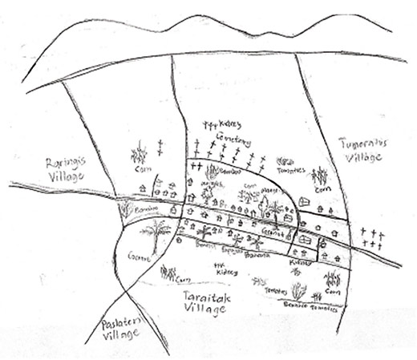
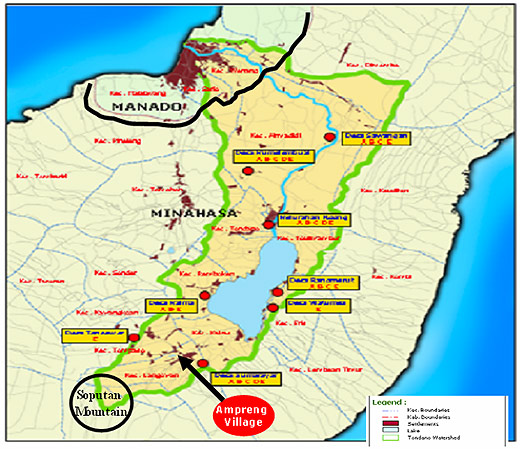
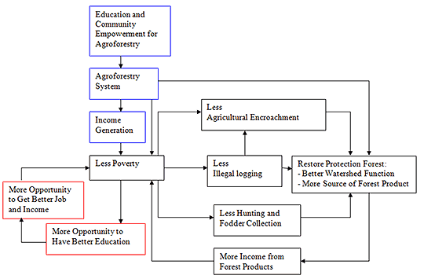

|
 |
 |
Puntos de
Inflexión Ecológica
- Cómo funcionan?
- Transformando círculos viciosos a círculos virtuosos
- Ingredientes para el éxito
- Elaboren sus propios Puntos de Inflexión Ecológica
Historias por Región
Historias por Tema
- Agricultura
- Agua y Cuencas
- Bosques
- Ecosistemas Urbanos
- Educación
- Energía
- Negocios
- Pesquerías
- Salud Pública
Videos Cortos
- Salvando un arrecife coral y una pesquería
(Filipinas) - Revitalizando vecindades urbanas con jardines comunitarios
(Nueva York) - Revirtiendo la deforestación tropical con bosques comunitarios
(Thailandia) - Rellenando aguas subterráneas con captación pluvial
(Rajastán, India) - Escapando la trampa de pesticidas
(India)
Explicando el Éxito
- Salvando un arrecife coral y una pesquería
(Filipinas) - Revitalizando vecindades urbanas con jardines comunitarios
(Nueva York) - Revirtiendo la deforestación tropical con bosques comunitarios
(Thailandia) - Rellenando aguas subterráneas con captación pluvial
(Rajastán, India) - Escapando la trampa de pesticidas
(India)

Ecología Humana: Presenta los principios de la ecología humana que sirven de fundamento a los Puntos de Inflexión Ecológica
Aplicando Puntos de Inflexión Ecológica al Desarrollo Sustentable de Bosques Comunitarios: Aldea Ampreng, Sulawesi, Indonesia
- Autor: Elsje Pauline Manginsela
- University of Hawaii, Geography 618 (Spring 2007), Human-Environment Systems
Paula Manginsela es estudiante de posgrado en Planificación Urbana y Regional en la Universidad de Hawaii. Su dictamen es producto del trabajo con un grupo de estudiantes de Indonesia de los departamentos de Geografía y de Planificación Urbana y Regional de la Universidad. Su misión fue aplicar los Puntos de Inflexión Ecológica a la deforestación en el Sureste de Asia. Su punto de partida fue la exitosa historia de Puntos de Inflexión Ecológica sobre la agrosilvicultura y la gestión comunitaria de bosques en Nakhon Sawan, Tailandia. Paula formuló el problema de la deforestación en su natal Sulawesi como un diagrama de retroalimentación demostrativo de los varios círculos viciosos en la “inflexión negativa”. Después, inspirada por la experiencia Tailandesa, ideó Puntos de Inflexión Ecológica y demostró como podría generarse una “inflexión positiva” revirtiendo los círculos viciosos de la inflexión negativa en Sulawesi. El trabajo de Paula es un ejemplo de como los Puntos de Inflexión Ecológica pueden ser utilizados para aplicar las lecciones de una historia exitosa para buscar soluciones a un problema en un sitio distinto, que de algunas formas es similar y en otras es diferente al sitio original.
~ Gerry Marten
Introduction
Ampreng village (Figure 1) is a village located adjacent to the Soputan Mountain Protection Forest upstream of Tondano Lake watershed (Figure 2) in Minahasa District (Figure 3), North Sulawesi. The location in the catchments area makes this village have a significant role in determining health of the watershed because Tondano Lake watershed provides water and power for Manado city and fishery activity for the people surrounding the lake. The Soputan Mountain Protection Forest has experienced deterioration. This condition is due to illegal logging and agricultural encroachment activity. Poverty, shortage of land and cash demand has forced people who live in the area surrounding the forest - especially from Ampreng, Tumaratas and Raringis villages - to exploit the forest. The highest rate of agricultural encroachment in the Soputan Mountain Protection Forest comes from Ampreng village. The majority (more than 70 percent) of people in Ampreng village are farmers. They have low level education (more than half do not complete elementary school) and consequently have limited opportunities to get better jobs. Poverty and no land to cultivate forced them to go to the Soputan Mountain Protection Forest and start dry land farming activity, by clearing land through illegal logging, to meet their basic needs.
Since the 1930’s, the Indonesian government designated the Soputan Mountain forest as a protection forest to maintain the hydrologic cycle function, which provides water and prevents natural hazards. However, the deforestation and degradation because of illegal logging and agricultural encroachment threaten this function. Therefore, reforestration and rehabilitation are ultimately necessary to maintain the forest function and prevent further negative impact.

Figure 1 - Map of Ampreng Village

Figure 2 - Map of Tondano Lake Watershed

Figure 2 - Map of Minahasa District
The Soputan Mountain Protection Forest belongs to the Indonesian government. The government has provided the Community Forestry Program to incorporate local people into forest management in order to restore the forest and also to meet the local people’s basic needs. This program became even more important when poverty threatened the environmental function of this Soputan Mountain Protection Forest.
This paper aims to assess the possibility of the Community Forestry Program’s ability to change from protection forest deterioration to forest restoration by using the EcoTipping Points concept as a tool. The EcoTipping Points approach can facilitate how to discover a type of intervention which can combine these two different needs - forest restoration and community well being - in the Ampreng village community. As a result, the effort can reverse unsustainable conditions to produce sustainable development.
Method
There are three steps, according to Marten 2007, for building an EcoTipping Points diagram: Step 1. Compose the chain of cause and effect of the environmental problem; Step 2. Identify a negative tipping point that stimulates the vicious cycle; and Step 3. Discover a positive tipping point that can reverse the vicious cycle to a virtuous cycle.
The Ampreng village data from the JICA Tondano Lake Study Team research report (2000), the Sam Ratulangi University Women Studies research report (2001), and personal experience (2001) were used to compile and create a chain of cause and effect. Then a vicious cycle was built from this chain. Lastly, based on literature review of Pacific Island (Clark and Thaman, 1993), the JICA Tondano Lake study team research report (2002) and the EcoTipping Points website, especially the Thailand agroforestry case (Suutari, 2007), a positive tipping point and virtuous diagram were created.
Concept of EcoTipping Points
EcoTipping Points is a concept developed by Marten et al. (2007). EcoTipping is a human-ecosystem approach. It refers to a tip in an eco-social system that can reverse the direction of change, a change from environment decline to health and sustainability (Marten, 2007). Grodzins initially used the term tipping point in 1957 to describe a phenomenon of a total change from a white neighborhood to a non-white one. Then, Wolf in 1963 and Schelling in 1978 used the term to explain a phenomenon when total change occurred. Later, Gladwell in 2000 used the term to state the point in time when a new idea emerged and spread rapidly through an entire community. All of them - Grodzins, Wolf, Schelling and Gladwell - used the tipping point term to explain a feedback loop and the power of feedback loops to stimulate change (Marten, 2007).
EcoTipping Points, according to Marten (2007), provide an explanation of: (1) how a negative tipping point can form a vicious cycle and can force environment decline; (2) in contrast, how a positive tipping point, usually embodied as improvement in environmental technology can reverse the vicious system to a virtuous system. A vicious system is a feedback loop that becomes worse over time while a virtuous system is a system which reinforces itself by becoming better; and (3) how the new virtuous system “locks in” itself by enriching and improving itself.
Application of EcoTipping Points in Ampreng Village Case
Based on the literature reviewed, the three steps of EcoTipping Points can be applied to the Ampreng village case. The application of these steps to the Ampreng village is as follows:
Step 1. The chain of cause and effect
- poverty - illegal logging
- poverty - agricultural encroachment
- illegal logging - agricultural encroachment
- low education - less opportunity to get jobs and income
- less opportunity to get job and income - poverty
Step 2. The vicious cycle: A negative tipping point (Diagram 1)
Poverty in Ampreng village has caused low education levels and a shortage of jobs. This situation forced the local community to exploit the Soputan Mountain Protection Forest to do illegal logging, agriculture encroachment, hunting, and collection of fodder and fuel wood. These activities degraded the forest and as a result, the watershed function declined. The degradation of the forest caused other forest products, such as non-timber products, to decrease. In turn this decrease in non-timber products, such as honey, vegetables, and fruits, caused the people surrounding the forest to get poorer. Moreover, the decline of watershed function generated flooding, soil sliding, and other natural hazards. Diagram 1. A Negative EcoTipping Point of Ampreng Village.

Diagram 1 - A Negative EcoTipping Point of Ampreng Village
Step 3. A positive tipping point by the intervention of the Agroforestry (Diagram 2).
Based on the literature review, the JICA Tondano Lake Study Team recommendation (2002), Agroforestry in Pacific Islands by Clarke and Thaman (1993), agroforestry in Thailand by Suutari (2007), and van Noordwijk (2003) provided opportunities to fulfill both environment and economic needs through agroforestry. Agroforestry is an integration involving practice and management of forestry, agriculture, and/or husbandry in the same land area (*websites). The agroforestry system supported by ‘education and community empowerment for agroforestry’ can stimulate income generation. Income generation, in turn, helps people get out of poverty. Implemented agroforestry, by emphasizing planting multipurpose trees in the Soputan Mountain Protection Forest under the Community Forest Program can increase tree coverage to rehabilitate cleared land caused by illegal logging and at the same time can fulfill the basic needs and cash demand of the community. Meeting basic needs and cash demand will hopefully allow the community able to improve their education and in turn provide opportunities to have better jobs and income. Then the system will reinforce itself improving in terms of environment recovery and local community quality of life.

Diagram 2 - A Positive EcoTipping Points of Ampreng Village
Conclusion
Recognizing a negative tipping point of a feedback loop or vicious cycle, as a strategic point of intervention, can increase opportunities for success. A strategic point in the Ampreng village case is an agroforestry system. This intervention of agroforestry as new environmental technology is an appropriate alternative to reverse the vicious cycle to a virtuous one. Agroforestry can increase local community welfare by reducing poverty and at the same time can increase the Soputan Mountain Protection Forest condition by restoring the watershed function and the source of forest products.
Lesson Learned
The EcoTipping Points approach can stimulate our thought to identify the direct and underlying factors in environment destruction in the Soputan Mountain Protection Forest. Moreover, compiling all direct and underlying factors and making a chain will help to construct a vicious feedback loop. This vicious feedback loop helps to identify a strategic point of intervention with the highest possible effect to change the system from unsustainable to sustainable. This approach also provides further information into the causes of community poverty and deforestation as well as the antidotes for these problems.
References
Clarke, W.C. and R.R. Thaman (Editor). 1993. Agroforestry in the Pacific Islands: Systems for Sustainability. United Nations University Press. Tokyo - New York - Paris. Retrieved on April 23
Suutari, Amanda. 2007. Thailand - Tailandia - Provincia Nakhon Sawan - Agrosilvicultura y Gestión Forestal Comunitaria. Retrieved on April 23, 2007.
Marten, Gerry. 2007. Acerca de los Puntos de Inflexión Ecológica. Retrieved on April 23, 2007
JICA Tondano Lake Study Team. 2000. The Study on Critical Land and Protection Forest Rehabilitation at Tondano Watershed in Indonesia. Nippon Koei
van Noordwijk, Meine., James M. Roshetko, Murniati, Marian Delos Angeles, Suyanto, Chip Fay and Thomas P. Tomich. 2003. Forest Management: Lessons From South East Asia. For delivery at: UNFF Intersessional Experts Meeting on the Role of Planted Forests in Sustainable Forest Management Conference, 24-28 March, Wellington, New Zealand
Websites:
www.fao.org/docrep/X5327e/x5327e03.htm
www.sustainableag.net/glossary_a-d.htm
www.watercorporation.com.au/environment/environment_9899_glossary.cfm
Este sitio web contiene materia traducida del sitio web www.ecotippingpoints.org.
Traducción: David Nuñez. Redacción: Gerry Marten